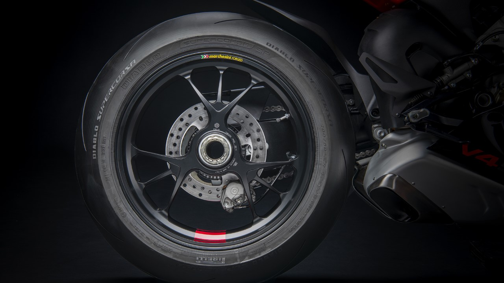
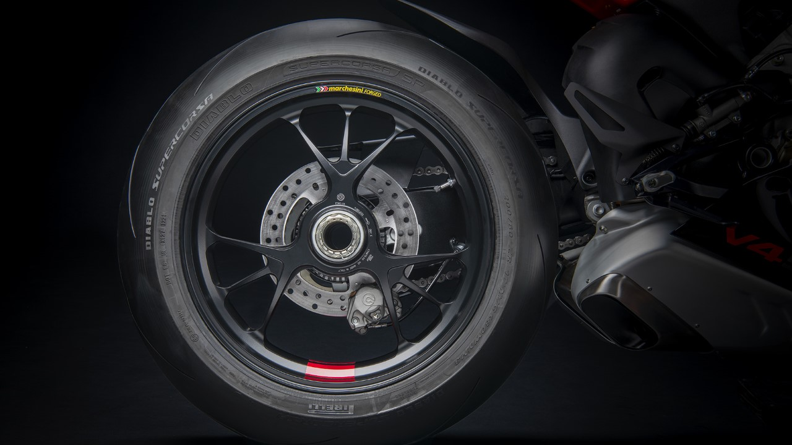
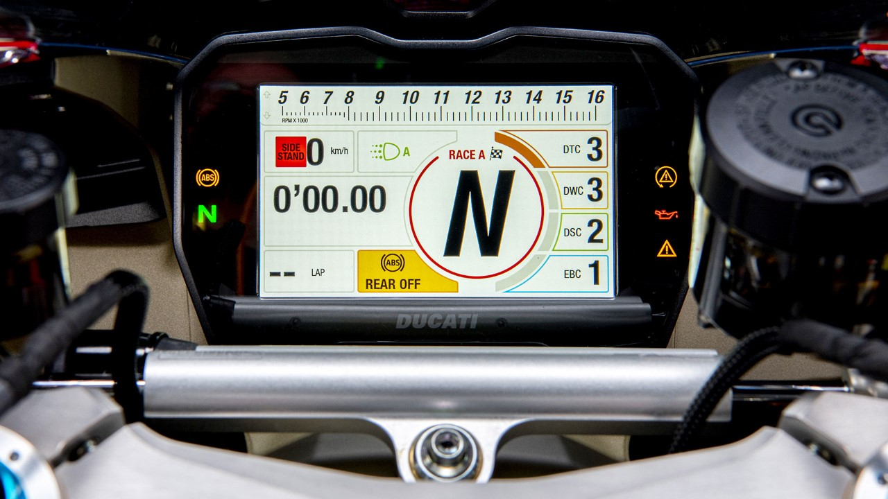
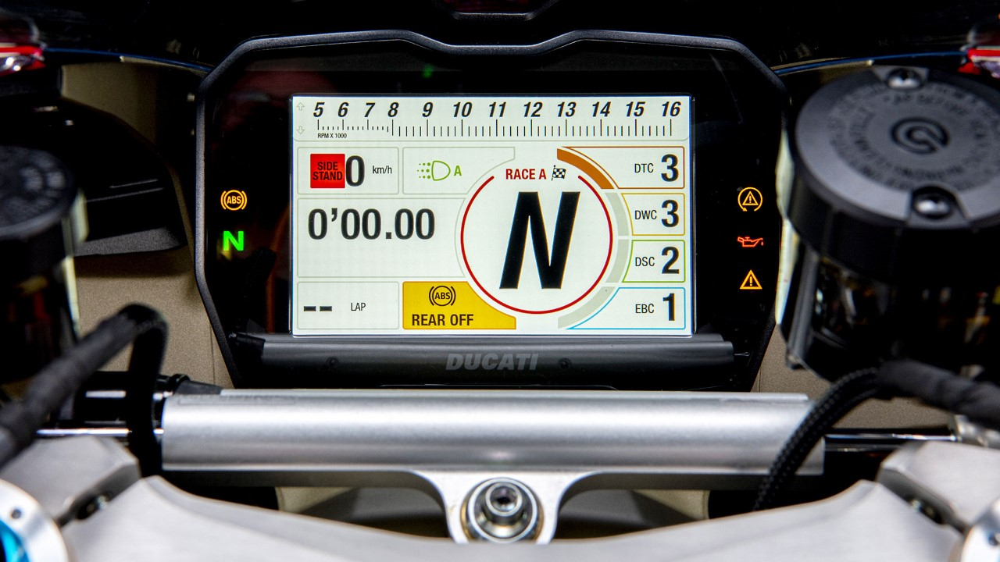

Ducati onthult de technische details van het MotoE-project in een video waarin het prototype wordt
geïllustreerd door het team dat toezicht heeft gehouden op de creatie en de ontwikkeling ervan volgt.
“V21L” in Borgo Panigale identificeert Ducati's eerste elektrische motorfiets, een prototype
dat vanaf 2023 zal deelnemen aan de FIM MotoE™ World Cup, waarvan de motorfietsfabrikant uit Bologna
partner zal zijn als enige leverancier met 18 motorfietsen op het circuit tijdens elk raceweekend.

Het MotoE-project is van strategisch belang voor Ducati omdat het het mogelijk maakt expertise voor de
toekomst te ontwikkelen terwijl de aanpak die altijd het DNA van de in Bologna gevestigde fabrikant heeft
gevoed, behouden blijft: experimenteren met technologische oplossingen in de racewereld en ervoor zorgen dat
alles wat op dit gebied wordt ontwikkeld, vervolgens kan worden overgezet op motorfietsen die bestemd zijn
voor enthousiaste Ducatisti uit de hele wereld.
Claudio Domenicali, Ducati CEO: “Een paar weken geleden had ik de buitengewone
kans om met de
Ducati MotoE op het circuit te rijden en ik besefte meteen dat ik in een historisch moment leefde. De
wereld gaat door een complexe periode en milieuduurzaamheid is een element dat alle individuen en alle
bedrijven als prioriteit moeten beschouwen als we het delicate evenwicht van de planeet willen behouden.
Als Ducati hebben we deze noodzaak begrepen en zijn we op zoek gegaan naar een uitdaging waarmee we kunnen
bijdragen aan het gemeenschappelijke doel om de CO₂-uitstoot te verminderen en tegelijkertijd trouw
te blijven aan ons DNA dat verbonden is met racen. We kwamen vastberaden overeen om de meest performante
elektrische racemotor te ontwikkelen die de huidige technologie mogelijk maakt en om dit project te
gebruiken als een laboratorium om onze toekomst op te bouwen. Het resultaat dat we hebben bereikt is
verrassend. Zodra ik op de motor zat, besefte ik de kwaliteit van het door het team verrichte werk en toen
ik terugkeerde naar de garage voelde ik een diep gevoel van trots voor wat we opnieuw hebben kunnen
bereiken.”
Voor de productie van het MotoE-prototype heeft de motorfietsfabrikant uit Bologna een team samengesteld
dat
Ducati en Ducati Corse ontwerpers verenigt, waardoor een werkelijk buitengewone mix van vaardigheden is
ontstaan. De creatie van de motor volgde de procedure die gebruikelijk is voor productiefietsen, waardoor
een nauwe samenwerking tussen de leden van het team ontstond die leidde tot nieuwe manieren van denken en
ontwerpen, aangemoedigd door zo'n technologisch uitdagend project.
De taakverdeling en de voortdurende dialoog tussen de mensen die het team vormen waren gedurende het hele
proces van fundamenteel belang. Ducati R&D zorgde voor alle Project Management activiteiten, samen met het
ontwerp en de simulaties van de elektrische aandrijflijn, terwijl het ontwerp van de MotoE werd verzorgd
door het Centro Stile Ducati, dat ook de kleurstelling van de motorfiets creëerde. Ducati Corse, aan
de
andere kant, werkte aan het ontwerp van de elektronische onderdelen, aan de softwarecontroles en
-strategieën, aan de simulaties van de dynamica en aerodynamica van de motorfiets en tenslotte aan de
assemblage, het testen en de gegevensverwerving van de motorfiets.

Het resultaat tot nu toe is al bevredigend: de Ducati MotoE heeft een totaalgewicht van 225 kg (12 kg
minder dan de minimumeisen die Dorna en de FIM stellen aan een motor die de raceafstand kan afleggen) en kan
rekenen op een maximumvermogen en -koppel van respectievelijk 110 kW (150 pk) en 140 Nm, waarmee hij op een
circuit als Mugello (Italië) een snelheid van 275 km/u kon halen.
Vincenzo De Silvio, Ducati R&D Director: “Voor Ducati is de mogelijkheid om
leverancier te
worden van de FIM MotoE™ World Cup niet alleen een technologisch opwindende onderneming, maar ook de
beste manier om de uitdagingen van het nieuwe millennium te interpreteren. Racecompetitie is het ideale
terrein om innovatieve technologieën te ontwikkelen die vervolgens kunnen worden toegepast op
productiemotorfietsen. Op dit moment blijven de belangrijkste uitdagingen op dit gebied die welke verband
houden met de omvang, het gewicht, de autonomie van de accu's en de beschikbaarheid van de
oplaadnetwerken. Ducati's ervaring in de FIM MotoE™ World Cup zal een fundamentele
ondersteuning zijn voor product R&D, samen met de fysiologische evolutie van technologie en chemie.
Het helpen groeien van de interne expertise van het bedrijf is nu al essentieel om klaar te zijn wanneer
de tijd komt om de eerste straat elektrische Ducati in productie te nemen.”
De mix van expertise, passie en werk van het Ducati MotoE team heeft geleid tot de geboorte van een
elektrische fiets met unieke technische oplossingen. Te beginnen met het accupakket, het meest bindende en
kenmerkende element in termen van massa's en afmetingen, dat op de Ducati MotoE wordt gekenmerkt door
een vorm die speciaal is ontworpen om het natuurlijke verloop van het middengebied van de motor te volgen.
Het accupakket weegt 110 kg en biedt een capaciteit van 18 kWh met een in de staart geïntegreerd
oplaadpunt van 20 kW. Binnenin zitten 1.152 cilindervormige cellen van het type “21700”.
De omvormer, met een laag gewicht van 5 kg, is een eenheid die is afgeleid van een high-performance model
dat in de autosport wordt gebruikt voor elektrische voertuigen, terwijl de motor (21 kg gewicht en een
maximale rotatiesnelheid van 18.000 rpm) is ontwikkeld door een partner volgens de technische specificaties
die door Ducati zijn verstrekt. Het hele systeem is gebaseerd op een spanning van 800 V (met een volledig
opgeladen accupakket) om het vermogen van de elektrische aandrijflijn en daarmee de prestaties en het bereik
te maximaliseren.
Een van de meest geavanceerde technische oplossingen die op de Ducati MotoE is getest, betreft het
koelsysteem. De prototype-onderdelen worden namelijk gekoeld door een bijzonder geavanceerd en
efficiënt vloeistofsysteem met een dubbel circuit dat is ontworpen om te voldoen aan de verschillende
thermische behoeften van het accupakket en de motor/omvormer-unit. Dit garandeert extreem regelmatige
temperaturen met belangrijke voordelen voor de consistentie van de prestaties, maar ook voor de laadtijden.
Het is namelijk niet nodig om te wachten tot het accupakket is afgekoeld om het proces te starten: de Ducati
MotoE kan worden opgeladen zodra hij de garage binnenkomt, en het duurt ongeveer 45 minuten om hem op te
laden tot 80% van zijn actieradius.
De koolstofvezel behuizing van het accupakket fungeert ook als gespannen onderdeel van het chassis, net als
bij de Ducati Panigale V4 motor, met een aluminium monocoque Front Frame voor het voorste gedeelte dat 3,7
kg weegt. De achterkant bestaat uit een aluminium achterbrug van 4,8 kg met een geometrie zoals die van de
Ducati Desmosedici die in de MotoGP racet. Het achterste subframe, waarin de staart en het rijderszadel zijn
geïntegreerd, is gemaakt van koolstofvezel.
De vering is voorzien van een Öhlins NPX 25/30 drukvork met 43 mm diameter upside-down buizen aan de
voorzijde, afgeleid van de Superleggera V4, terwijl een Öhlins TTX36 schokdemper aanwezig is aan de
achterzijde en volledig instelbaar is. De stuurdemper is een verstelbare Öhlins unit.
Het remsysteem wordt geleverd door Brembo en is afgestemd op de specifieke eisen van de Ducati MotoE. Aan
de voorzijde bestaat het uit een dubbele stalen schijf met een diameter van 338,5 mm van grotere dikte, die
aan de binnenzijde is voorzien van lamellen met als doel het oppervlak voor thermische uitwisseling te
vergroten en de koeling van de schijf te verbeteren bij extreem gebruik op het circuit. Op deze dubbele
schijf werken twee GP4RR M4 32/36 remklauwen met een PR19/18 radiale hoofdremcilinder. Achteraan werkt de
P34-remklauw op een enkele schijf met een diameter van 220 mm en een dikte van 5 mm met een
PS13-mastercilinder. Teams kunnen er ook voor kiezen hun motor uit te rusten met een optionele
achterrembediening die op het linkerstuur is geplaatst en die de rijder kan gebruiken als alternatief voor
het pedaal.
Roberto Canè, directeur Ducati eMobility: “Ik herinner me de geboorte van
het
MotoE-project en elke fase van de samenstelling van het werkteam goed, met de betrokkenheid van Ducati
Corse-collega's en de zoektocht naar contacten binnen de Volkswagen Group die ons suggesties konden
geven
voor de ontwikkeling van dit project. Om deze motor te maken volgden we dezelfde procedure die we
gewoonlijk volgen bij een productiemotorfiets. We begonnen met het definiëren van het ontwerp van de
motorfiets en tegelijkertijd begon het technisch bureau met het ontwerpen van de verschillende
voertuigonderdelen. De oorspronkelijke opdracht was om een racemotorfiets te maken die aan de minimale
prestatie-eisen van Dorna voldeed. Dit project heeft het hele betrokken team verliefd gemaakt en zet ons
ertoe aan een motor te maken met betere eigenschappen dan oorspronkelijk door de organisator
gevraagd”.
Bij het ontwikkelingsproces van de Ducati MotoE was ook het Ducati Corse testteam onder leiding van Marco
Palmerini betrokken, dat op het circuit dezelfde methodes toepaste als in de MotoGP, mede dankzij de steun
van de coureurs Michele Pirro, Alex De Angelis en Chaz Davies. Het doel van het werk aan de elektronica was
het verkrijgen van een gasrespons zoals die van een endothermische eenheid en een respons van de
elektronische bedieningselementen (zoals Ducati Traction Control, Ducati Slide Control, Ducati Wheelie
Control en gas/motorrem-maps) die niet te onderscheiden is van die van de racemotoren waaraan Ducati-rijders
gewend zijn.
De mogelijkheid om de ontwikkelings- en testmethode toe te passen die al in de MotoGP wordt gebruikt, met
een precieze opeenvolging van tests die op de verschillende onderdelen moeten worden uitgevoerd om de
prestaties van elke dag op het circuit te maximaliseren, werd ook bereikt dankzij de efficiëntie van
het koelsysteem, dat de oplaadtijden tot een minimum heeft beperkt, waardoor een echt significante
gebruikscontinuïteit voor een elektrische motorfiets mogelijk wordt. Het ontwikkelingswerk ging gepaard
met
een specifieke leer- en opleidingscursus voor al het betrokken personeel, waarbij gebruik werd gemaakt van
de binnen de Volkswagen Group gedeelde kennis, om de totale veiligheid van de rijder en de technici te
garanderen.
Het feit dat Ducati deel uitmaakt van de Volkswagen Group, die elektrische mobiliteit tot een essentieel
onderdeel van haar “New Auto” 2030 strategie heeft gemaakt, vormt de beste voorwaarde voor een
buitengewone
uitwisseling van expertise op het gebied van elektrische aandrijflijnen. Ducati staat in nauw contact met de
expertisecentra van de Volkswagen Group en met het Centre of Excellence (CoE) in Salzgitter in Duitsland,
maar ook met
andere merken van de Volkswagen Group zoals Porsche en Lamborghini.
Het werkplan van het Ducati MotoE-project is al in een vergevorderd stadium van ontwikkeling en gaat in
hoog tempo door op weg naar 2023, het jaar waarin Ducati de rol van enige leverancier van het FIM
MotoE™ wereldkampioenschap op zich zal nemen met elk weekend 18 elektrische motorfietsen op het
circuit.
Het volgende doel voor de in Bologna gevestigde fabrikant is om de deelname aan de belangrijkste
racecompetitie ter wereld voor elektrische motorfietsen te benutten om te experimenteren met innovatieve
technologieën, nieuwe vaardigheden te trainen en te bestuderen hoe, zodra de technologie het toelaat,
een Ducati elektrisch voertuig gecreëerd kan worden dat sportief, licht en opwindend is en alle
liefhebbers tevreden kan stellen.


 

 
